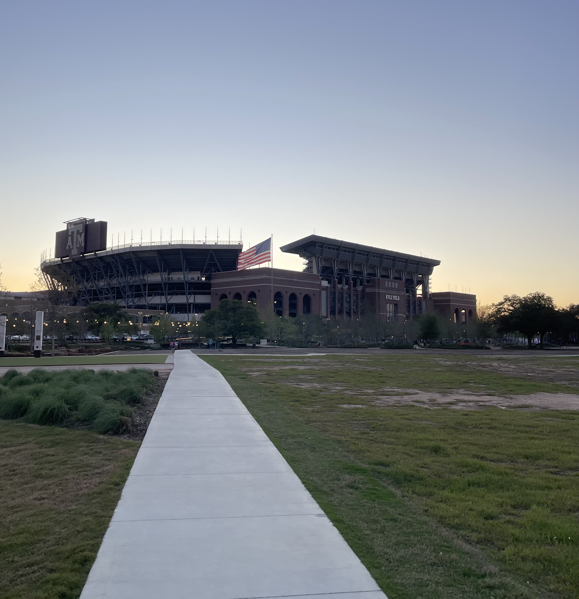

Tracking Trash Trends at Texas A&M
Trash accumulation is a growing issue across university campuses, including Texas A&M. As student populations grow and foot traffic increases in common areas, many trash bins begin to overflow faster than maintenance crews can respond. Overflowing bins not only affect the cleanliness and appearance of campus but also pose environmental hazards to local wildlife and plants. Birds and squirrels can become entangled in waste or ingest harmful materials, and excessive trash can block sunlight from reaching surrounding vegetation. Our project aims to address this issue by empowering students, faculty, and staff to report overflowing bins through a simple, geospatial-based tool. These reports will be visualized on a live map accessible to the campus maintenance team, allowing for quicker response times and better allocation of resources. By identifying high-traffic waste hotspots, the university can take proactive steps such as increasing bin frequency, expanding maintenance routes, or installing additional receptacles in key areas.
